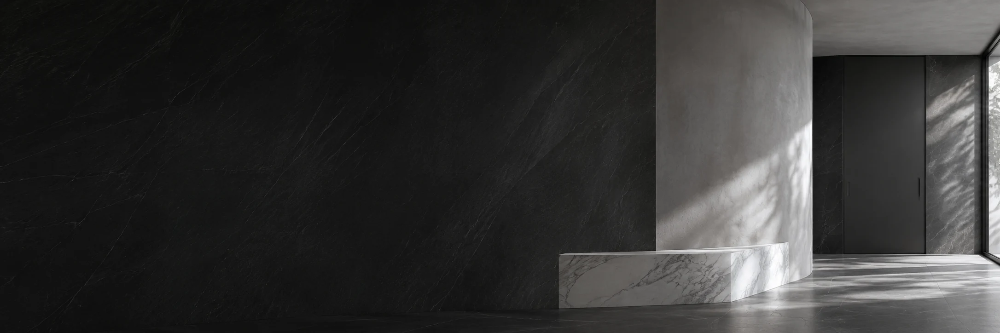
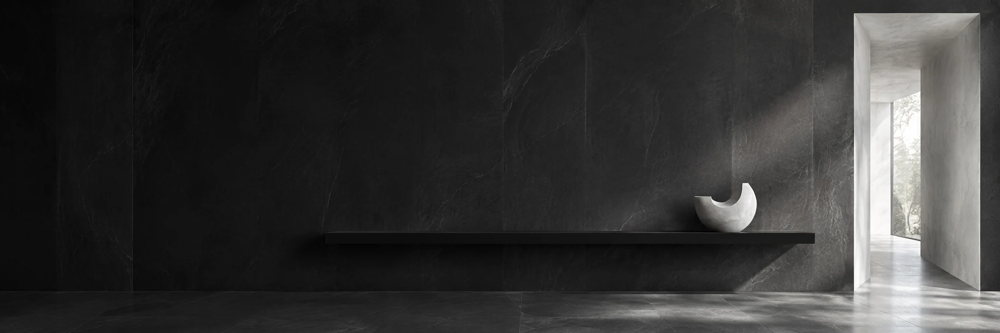

Nasze realizacje
i projekty.
Wnętrza, które mówią więcej
Dwa wejścia do portfolio
Wybrane realizacje.
Wszystkie realizacje3 miejsc na realizacje
Brak pozycji dla wybranych filtrów. Zmień filtry lub wyczyść wyszukiwanie.
Zdjęcia i opisy zostaną uzupełnione materiałami studia.
